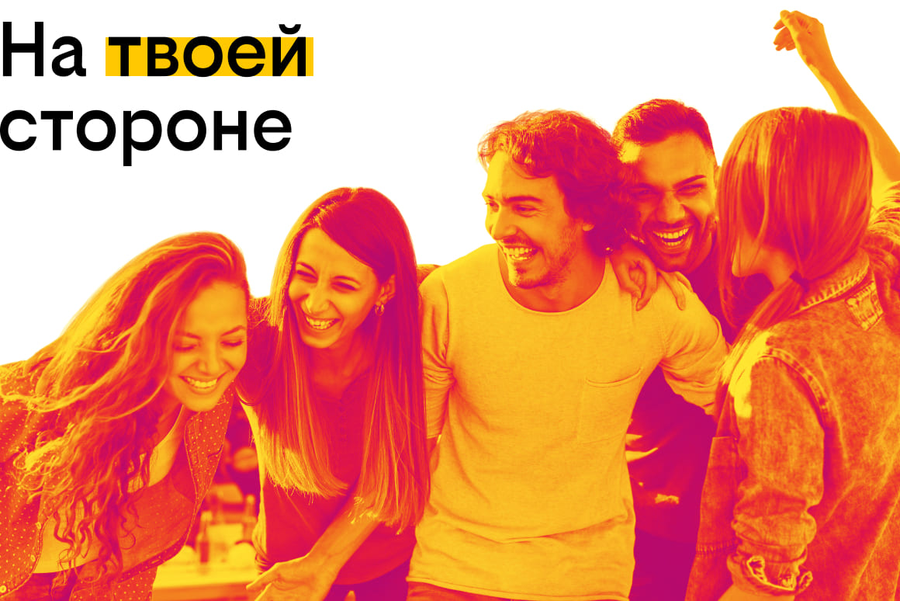

билайн набирает команду специалистов поддержки клиентов. Удаленная работа, работать можно в любом месте, где есть хороший интернет и тишина на заднем плане
Обязанности:
- Подготовка подходящих заказчику предложений и презентация онлайн
- Консультирование клиентов по реализации брендинговых сервисов в постпродажный период
- Отсутствие функционала продаж, только консультативное общение с клиентами по телефону и в чатах с соблюдением коммуникативных норм
- Выявление требований клиента и оценка возможностей компании по выполнению задания
- Постановка задач и ТЗ
- Контроль исполнителей в рамках ведения проектов (взаимодействие с программистами, дизайнерами, юристами, контент-менеджерами, копирайтерами, маркетологами)
- Контроль всех этапов реализации проекта (составление планов и отчётов, презентация клиенту, обсуждение дальнейших планов, укрепление сотрудничества с клиентом)
- Ведение проектов в Jira
Требования:
- Навыки работы с пакетом MS Office (обязательно)
- Уверенное пользование мобильными приложениями и web-сайтами
- Грамотная устная и письменная речь
- Опыт деловой коммуникации
- Клиентоориентированность и помощь в решении запросов заказчика
- Готовность к работе с большим объемом задач в сжатые сроки
- Знание основ веб-технологий (сайты, мобильные приложения, figma)
- Будет преимуществом понимание web-разработки и/или опыт работы проектным менеджером в web или desain студии
Условия:
- HeadHunter - современная технологичная компания с качественными продуктами. Мы даем большое количество возможностей своим сотрудникам:
- Достойная заработная плата (выше среднего уровня, предлагаемого на рынке труда);
- Корпоративный ДМС (решаем вопросы со здоровьем быстро и удобно);
- Корпоративная библиотека My Book;
- Если ты активный участник корпоративной жизни, то несмотря на удаленку мы имеем массу активностей от лекций и коллективных занятий спортом онлайн до детского клуба и школы экологии;).
- Участие в спортивных мероприятиях с беговой командой HeadHunter;